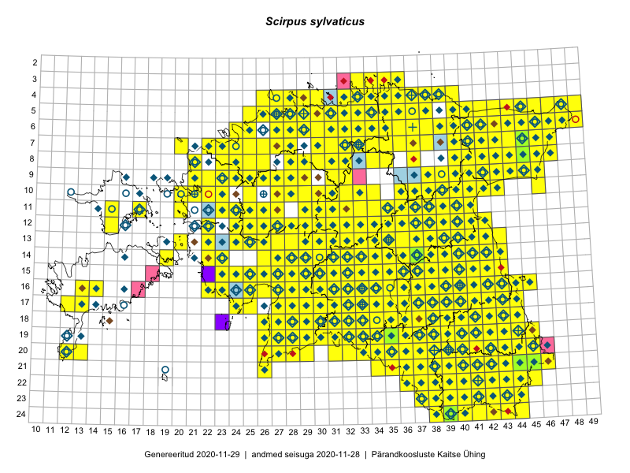

Scirpus sylvaticus
Uuendatud: 2016-12-01
Kaardile koondatud taksonid: Scirpus sylvaticus L.

Kaart põhineb 786 kirjel.
Kuvatud viited 20 esimesele andmebaasikirjele, ülejäänud PlutoFis
- Malle Leht: 2015-05-22: : ala
- Malle Leht: 2015-05-16: : ala
- Tiit Hallikma, Toomas Kukk, Indrek Tammekänd: 2015-06-09: 12-28: ala
- Malle Leht: 2015-07-09: : ala
- Peedu Saar: 2015-05-09: 13-30: ala
- Thea Kull: 2015-07-07: 16-40: ala
- Rein Kalamees: 2015-06-08: 05-32: ala
- Malle Leht: 2015-08-02: : ala
- Toomas Kukk, Peedu Saar: 2014-09-25: 07-42: ala
- Toomas Kukk, Peedu Saar: 2014-09-23: 07-42: ala
- Toomas Kukk, Indrek Tammekänd: 2015-05-09: 14-28: ala
- Toomas Kukk, Peedu Saar: 2014-09-24: 06-40: ala
- Toomas Kukk, Peedu Saar: 2014-09-24: 06-41: ala
- Rein Kalamees, Kersti Püssa: 2015-08-31: 04-32: ala
- Tiit Hallikma, Indrek Tammekänd, Toomas Kukk: 2015-06-09: 12-29: ala
- Rein Kalamees, Kersti Püssa: 2015-08-04: 03-33: ala
- Tiit Hallikma, Toomas Kukk: 2015-07-21: 05-45: ala
- Toomas Kukk, Indrek Tammekänd: 2015-05-10: 13-34: ala
- Rein Kalamees, Kersti Püssa: 2015-09-02: 03-36: ala
- Toomas Kukk, Raivo Kalle: 2015-05-14: 09-41: ala